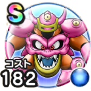

デスマシーンモデルE
ドラクエ7ReWALKこころ最大コスト+4スキルの斬撃・体技ダメージ+7%メラ属性斬撃・体技ダメージ+14%ヒャド属性斬撃・体技ダメージ+14%デイン属性斬撃・体技ダメージ+14%ふきとばし耐性+7% / 9.0点
くわしい特徴
【ランク特殊効果】 こころ最大コスト+4スキルの斬撃・体技ダメージ+7%メラ属性斬撃・体技ダメージ+14%ヒャド属性斬撃・体技ダメージ+14%デイン属性斬撃・体技ダメージ+14%ふきとばし耐性+7%

ドラクエ7ReWALKこころ最大コスト+4スキルの斬撃・体技ダメージ+7%メラ属性斬撃・体技ダメージ+14%ヒャド属性斬撃・体技ダメージ+14%デイン属性斬撃・体技ダメージ+14%ふきとばし耐性+7% / 9.0点
【ランク特殊効果】 こころ最大コスト+4スキルの斬撃・体技ダメージ+7%メラ属性斬撃・体技ダメージ+14%ヒャド属性斬撃・体技ダメージ+14%デイン属性斬撃・体技ダメージ+14%ふきとばし耐性+7%